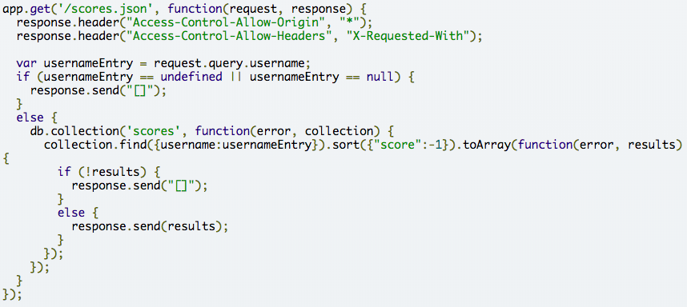
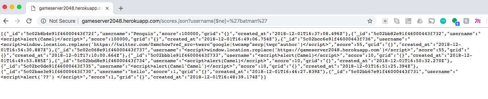
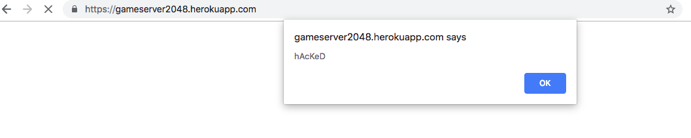
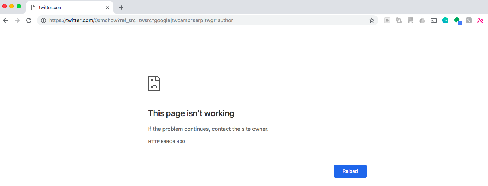
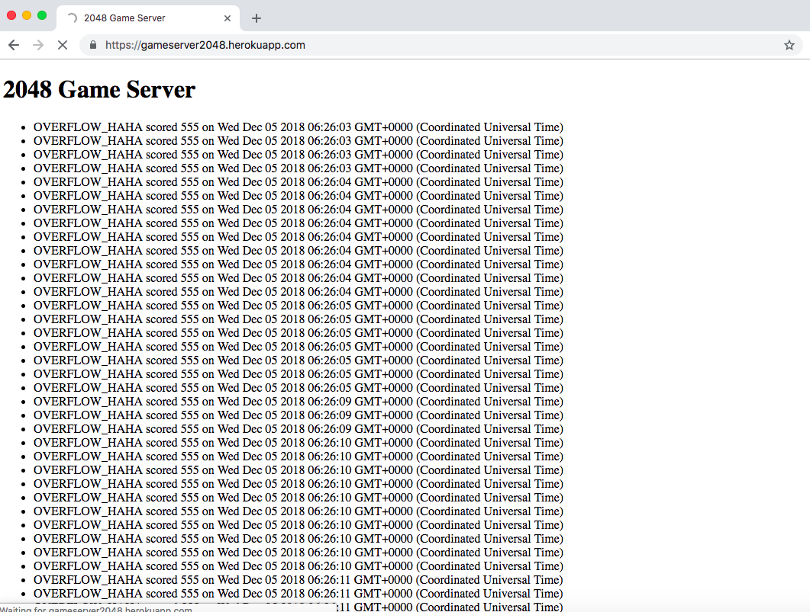
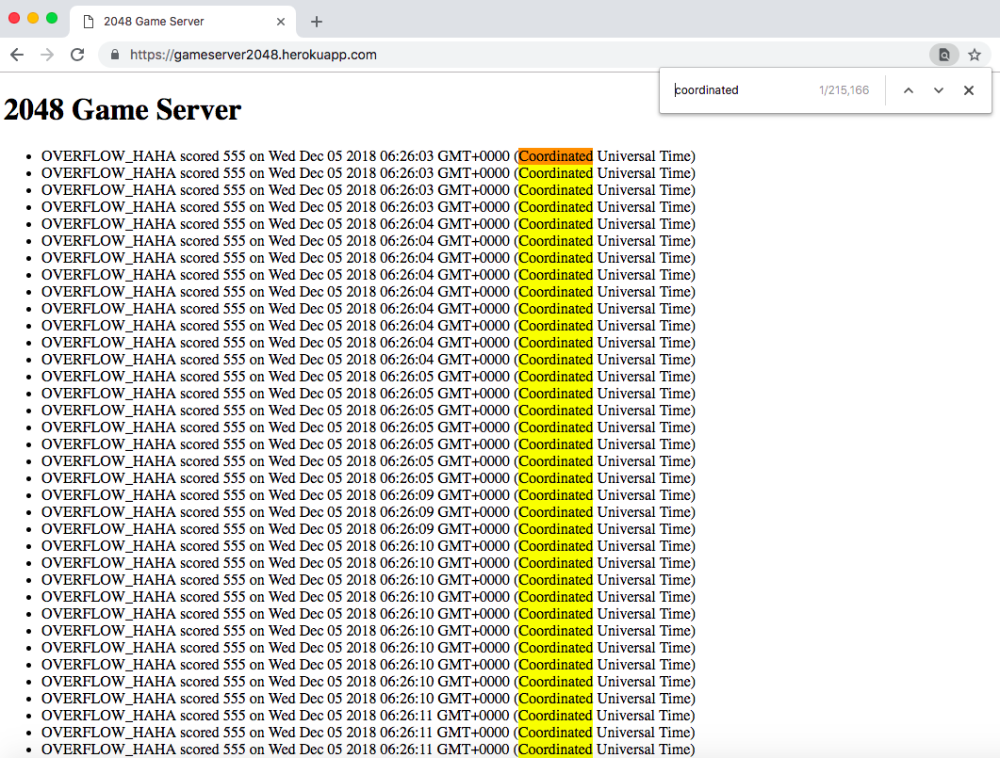

I have been tasked to find 3 security and privacy problems in Ming's Assignment 3 for Comp20. Assignment 3 is modeled on the game 2048; after finishing the game, users input and submit their username. Once submitting, the user's name, score, grid, and date are all inputted into a database to be displayed on a highscores page.
To test this application, I began by initially performing attacks without reading the source code, aka 'black box' testing. In my terminal, I used: 'curl --data "username=someName&score=someScore&grid={}" https://gameserver2048.herokuapp.com/submit' to start playing around with the types of data I could post to the database.
After 'black box' testing, I started looking at the application source code. I wanted to make sure that I understood the methods in which the posting and getting of data worked.
I found the following three security/privacy issues in this assignment:
Injection in MongoDB
This issue occurs during the querying of scores (supposedly) based off of a known username in the database.
This is a high severity issue. With this type of injection attack, all information within the database is revealed to the user; the user will be able to obtain more info than they should be allowed to view. If any private information were stored in the database, then anyone could obtain this information.
I found this issue when playing around with the /scores.json page of Assignment 3. In the URL, I changed the query such that the entire URl read: https://gameserver2048.herokuapp.com/scores.json?username[$ne]=batman '$ne' is also known as the 'not equals' operator, allowing for the request to return all data without knowing a specific username to lookup.
This issue occurs because there is no sanitizing/cleaning of the query string before it executes the response.
Here's a screenshot:
As you can see, all data (at the time) in the database was displayed with this '$ne' injection attack. I should not have been able to view data from usernames that I did not know.
To avoid this type of injection attack, there should be some cleaning of the query request before it executes the response.
Cross-Site Scripting (XSS)
This issue occurs during the submission of data into the database. More specifically, this occurs when users submit their username to the system after completing the 2048 game.
This is a high severity issue. With cross-site scripting, users are vulnerable to page redirects to malicious sites that can execute various scripts that may take user information. In addition to page redirects, cross-site scripting can execute unwanted other unwanted scripts that may exploit the end user.
I found this issue when playing around with the submission of new user data (inputting the username along with the score and grid). I used the following two commands (without spaces before 'script') to hack the site:
After submitting the curl post request with an alert script, here is what occured after going to the address https://gameserver2048.herokuapp.com/ :
Conversely, after submitting the curl post request with the window.location script, here is what occured after going to the address https://gameserver2048.herokuapp.com/ :
In this case with the page redirect, all of the '%' in the URL I submitted were replaced with "^", thus Ming's twitter page was unable to correctly load.
To avoid XSS, you should clean and validate all user input before inserting the information into the database/page. This can be done by stripping special characters from all inputs before storing them in the database or page. For example, you could remove '/', '\', '<', '>', '%', '&', ' " ', etc. from the input string.
Overflow/Overload Database
This issue occurs during the submission of data into the database; there are no limits to the rate of inputs or quantity of inputs a certain IP address may submit.
This is a medium-severity issue. Unnecessary information is being inserted into the database at an alarmingly fast rate. Users are not being affected directly such that their personal information could be lost or they could be sent to malicious websites, and the database system is not revealing any private information. However, the overloading of a database will slow down the site considerably until it eventually crashes, which can pose a large problem.
I found this issue when looking through the code and realizing that I could insert as many inputs as I wanted without being blocked. Once again, this occurs in the 'app.post(...)' section of code as already displayed in a screenshot above.
Once noticing this, I was able to run an infinite loop script to keep adding the same data entry into the database. I left this script running for a very long time (whoops, partially unintentional—I forgot it was running because I had left it going for so long).
After running the infinite loop script for a while, the page https://gameserver2048.herokuapp.com/ would take a very long time to load.
Eventually, the page had over 215,000 database entries in it due to the running script. The page was incredibly slow upon refreshing, and eventually crashed (according to the Piazza posts—I never actually saw this happen).
To prevent this from occuring, you can limit the number of submissions per minute so that the database cannot get overloaded (i.e. the MBTA API which limited the number of requests). Additionally you could actually just limit the number of submissions per minute from a specific IP Address to prevent any one user from overloading the database.
Overall, while the Assignment 3 code is fully functional and meets all spec requirements, it still contains various security flaws. It is important to never trust the user and to code defensively such that your system cannot get attacked by malicious users.